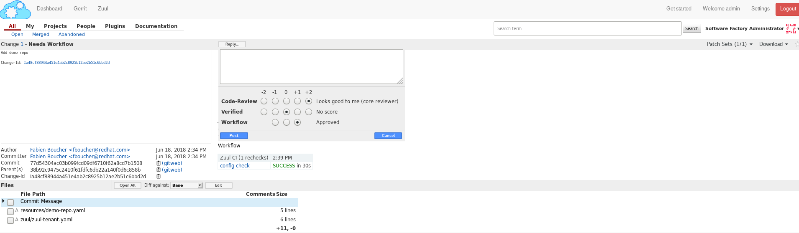
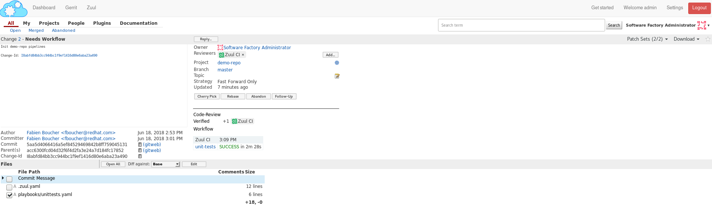
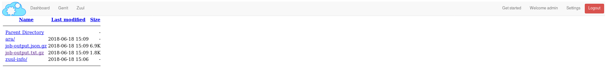
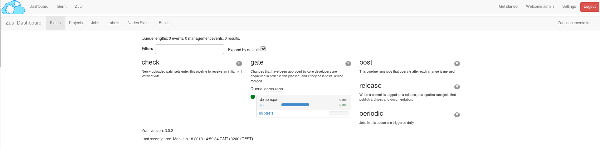
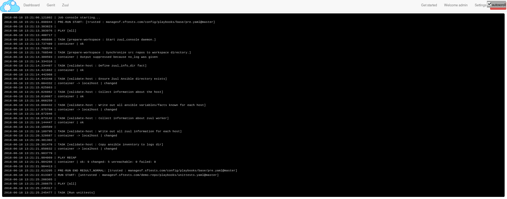
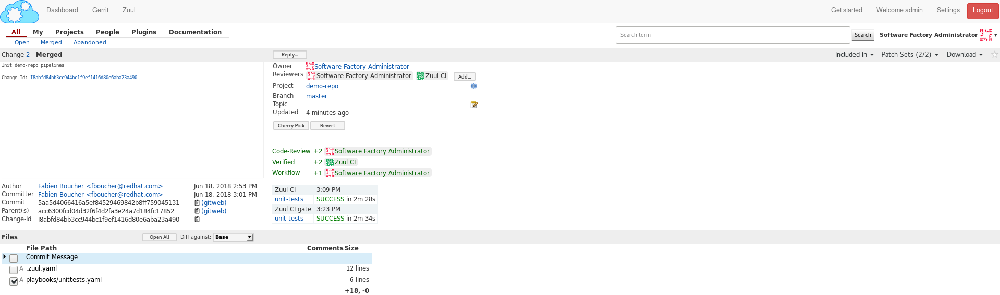

In this article, we will create a project and explain how to configure a basic CI workflow in order to gate your first patch with Zuul. The instructions and examples below are given for a sandbox deployment but are easy to adapt to any deployment of Software Factory.
To deploy a Software Factory sandbox please read this article (How to setup a Software Factory sandbox).
This article is part of the Zuul hands-on series.
Note that most of the links reference sftests.com which is the default domain of the sandbox documented in the How to setup a Software Factory sandbox blog post. Make sure to adapt the links if necessary.
Projects in Software Factory
A project is simply an umbrella entity that consists of one or several code repositories, akin to a Github organization for example. It is a handy way to regroup repositories by themes or purpose. A repository must belong to a project. Don't be confused, in the Zuul terminology, a project is a git repository.
Create and initialize a demo project
We need to create a patch on the config repository. This patch will consist in a YAML file that describes the new repository.
For the following example you will need to install git review package on your local machine.
dnf install git-review
or
yum install git-review
or
pip install git-review
or
python -m pip install git-review
Clone the config repository
From your host, clone the config repository and configure git review:
git clone -c http.sslVerify=false https://sftests.com/r/config
cd config
git review -s
You will be prompted for your username on SF, use the admin username.
Define the demo-repo repository
Repositories are defined in the resources folder of the config repository. Each YAML file in this folder can define one or several Software Factory's resources like a project or a Gerrit repository. You can read more about the resources definition in this documentation (sftests.com).
Create the resources/demo-project.yaml file and add the following into it:
resources:
projects:
demo-project:
description: Demo project
source-repositories:
- demo-repo
repos:
demo-repo:
description: A demo repository
acl: demo-acl
acls:
demo-acl:
file: |
[access "refs/*"]
read = group config-core
owner = group config-ptl
[access "refs/heads/*"]
label-Code-Review = -2..+2 group config-core
label-Code-Review = -2..+2 group config-ptl
label-Verified = -2..+2 group config-ptl
label-Workflow = -1..+1 group config-core
label-Workflow = -1..+1 group config-ptl
label-Workflow = -1..+0 group Registered Users
submit = group config-ptl
read = group config-core
read = group Registered Users
[access "refs/meta/config"]
read = group config-core
read = group Registered Users
[receive]
requireChangeId = true
[submit]
mergeContent = false
action = merge if necessary
groups:
- config-ptl
- config-core
Run git review to send the patch on Gerrit:
git add resources/demo-project.yaml
git commit -m"Add demo repo"
git review
Two Zuul jobs are attached to the config repository. The following workflow applies to patches on this repository:
- The config-check job validates incoming config patches (linting, syntax, etc). This job is run at check time (when a new patch or a new revision of a patch is pushed on Gerrit) and at gating time (after the patch is approved and just before it is merged).
- Once merged, the config-update job is executed, in the post* pipeline to apply the new configuration to Software Factory.
In other words, Zuul ensures the Configuration as Code workflow of Software Factory.
To confirm the repository creation, connect to the Gerrit interface (sftests.com) as the admin user, then find the Add demo repo patch. Make sure Zuul CI has voted +1 Verified, then approve and schedule for merging by giving the patch a +2 Code-Review and a +1 Workflow.
Wait a couple of minutes until the demo-repo appears in the Gerrit projects list page (sftests.com).
Provision the demo-repo source code
We can now clone demo-repo:
git clone -c http.sslVerify=false https://sftests.com/r/demo-repo
cd demo-repo
git review -s
You will be prompted for your username on SF, use the admin username.
Let's add some basic code in demo-repo; create the following hello.py file in the repository:
import unittest
class TestHello(unittest.TestCase):
def test_hello(self):
self.assertEqual(hello(), 'Hello Zuul')
def hello():
return "Hello Zuul"
if __name__ == "__main__":
print(hello())
Push the code to the demo-repo repository. Note that we don't use git review here; we simply bypass the review process of Gerrit since no CI testing is configured for this repository yet. We can do that because of the ACLs we set earlier on the repository. Note also that the remote is called gerrit (which has been set by git review -s).
git add hello.py
git commit -m"Initialize demo-repo project"
git push gerrit
Configure a Zuul job for demo-repo
We will now create a job and configure the demo-repo project's Zuul pipelines, so that this job is run at checking and gating times to ensure the quality of a patch.
Zuul allows jobs and pipelines to be defined in an external repository (this is useful if you have several repositories that share the same testing needs, for example setting up a common testing environment), but also to be defined within a code repository itself. This is the approach we're going to use here.
First, we define a job playbook in demo-repo. To do so, create the playbook directory then the file playbooks/unittests.yaml:
- hosts: all
tasks:
- name: Run unittests
shell:
cmd: "sleep 60; python -m unittest -v hello"
chdir: "{{ zuul.project.src_dir }}"
Note that we are using the zuul.project.src_dir variable to set the task's working directory to the repository's root. Zuul defines a fair amount of variables that can be used when writing jobs; the full list and descriptions are available in the Zuul's documentation (sftests.com).
In the second step, we define the unit-tests Zuul job and attach it to the project's Zuul pipelines. Zuul looks for a file named .zuul.yaml within the repository; this file defines jobs and pipelines for this repository.
In demo-repo, create the file .zuul.yaml:
- job:
name: unit-tests
description: Run unittest
run: playbooks/unittests.yaml
- project:
check:
jobs:
- unit-tests
gate:
jobs:
- unit-tests
Submit the change to Gerrit:
git add -A
git commit -m"Init demo-repo pipelines"
git review
Note that this time, we don't push directly the change to the repository but we go through the code review system. This is because Zuul automatically detects changes to the configuration files within a patch on the repository, and evaluates them speculatively. In other words, the jobs we added to the check pipeline will be run to validate the patch, even though this configuration change hasn't been merged yet.
This lets you make sure that your changes to the CI do what you expect before applying them globally, instead of potentially wrecking the CI for all contributors.
Gating made easy
With this rather simple patch, we tell Zuul to:
- run the unit-tests job in the check pipeline, ie whenever a new patch or a change to an existing patch is submitted to Gerrit.
- run the unit-tests job in the gate pipeline, ie right after a patch has been approved but before it is merged. This is to acknowledge any discrepancies between the state of the repository when the change was last tested and its current state (several patches might have landed in between, with possible interferences). We will dive into the details of the gate pipeline in a follow-up article.
- call the Gerrit API to merge the patch if the job execution in the gate pipeline succeeded.
The unit-tests job is simple, it tells Zuul to execute the Ansible playbook unittests.yaml, which contains a single task, ie run python's unittest module on the hello.py file.
The job can be kept simple because it "inherits" automatically from the default base job (sftests.com) which handles all of the grisly details like setting up the test environment and exporting logs. The base job, rather than being inherited, more accurately encapsulates the unit-tests job, by running a pre playbook before unit-tests, and a post playbook after unit-tests, regardless of whether the latter ended in success or failure.
Because we haven't specified an inventory (also called nodeset, due to Zuul's multi-node capabilities), the unit-tests job will be run on the default nodeset defined in the base job. By default in Software Factory it consists of a single OCI container provided by the RunC driver of Nodepool.
Software Factory's base job's post playbook exports the jobs' logs to the Software Factory logs server.
Now, check that Zuul has run the job in the check pipeline and has reported a +1 in the Verified Label, on the patch's Gerrit page.
To access a given job's run's logs, simply click on the job name. By default the console logs are saved in job-output.txt.gz. The ARA report gives a more condensed view of the playbook's execution. Also have a look at zuul-info/inventory.yaml which contains all Ansible variables available at playbook runtime.
Just as we did before for the config project, use the Gerrit web interface to approve the change and let Zuul run the gate job and merge the change.
You should soon see the gate job appear on the Zuul status page (sftests.com).
Clicking on the job's name brings you to the Zuul job console. The unittests playbook should wait for 60 seconds before starting the python -m unittests command so we should have time to witness the execution of the job in real time in the console.
As soon as the gate job finishes successfully, Zuul merges the patch in the demo-repo repository.
If you reached that point, congratulations, you successfully configured Zuul to gate patches on demo-repo !
Now, any new patch submitted to the demo-repo repository will trigger automatically this same CI workflow.
Exercises left to the reader
- Send a new patch on demo-project that fails to pass the check pipeline. Then fix it by amending it.
- Read the default base job in the config repository in _jobs-base.yaml (sftests.com).
- Read the pre.yaml (sftests.com) and post.yaml playbooks that the base job run prior and after every job.
- Look at the default pipelines definitions (sftests.com). Pipelines define strategies to trigger jobs, and report job results.
These files are part of how Zuul is integrated into Software Factory, they are self managed but knowing their existence is quite important for mastering Zuul.
You can refer to Zuul's latest documentation or refer to the version included with any Software Factory deployment.
Stay tuned for the next article, where we will use Zuul's jobs library to take advantage of pre-defined Ansible roles to ease job creation.